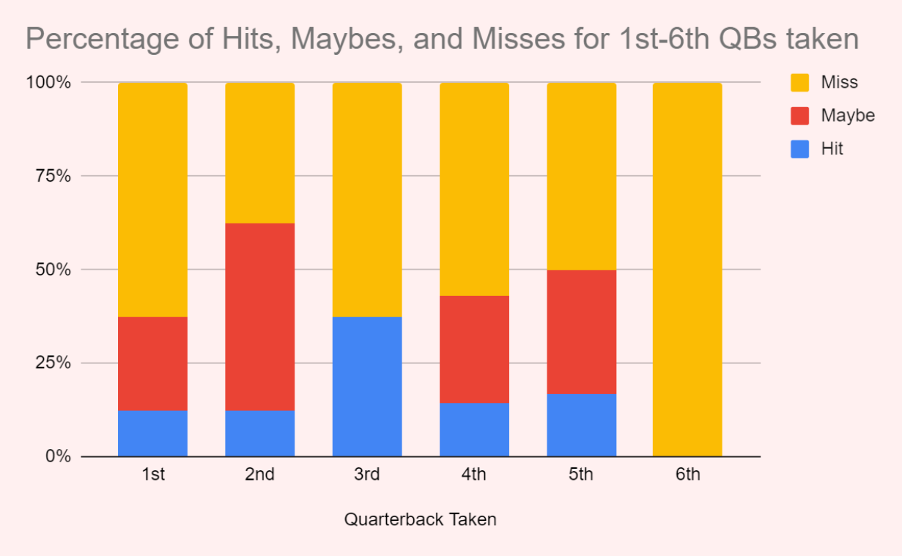

Drafting Quarterbacks
By Anish Cherwoo | May 26, 2021
The NFL Draft is an interesting time because almost no new information comes out for 4 months from the end of the college season up until Draft Day. Yet every week, if not every day, the media pushes new narratives regarding the top prospects in the draft. This has been particularly prevalent in this year’s draft with there being such a top-heavy quarterback class. So really I just wanted to talk about the top quarterbacks in this class: Trevor Lawrence, Justin Fields, Zach Wilson, Mac Jones, and Trey Lance.
I am a 49ers fan as well as an Ohio State fan, so I have been watching the lead up to this Draft very carefully.
I would love for my favorite college team’s QB to go to my favorite NFL Team.
Really motivation for writing this comes from the way Justin Fields is being dealt with, and if I as an Ohio State and 49ers fan do not talk about this who will.
“He does not get through his reads/read the field well” - The Ohio State offense is one that is littered with choice route plays in which the receiver has until the last second while running his route to declare his final intention, and for Fields this means that he has to stay looking at a given receiver for longer than he may want to. Also according to Fields himself, he wants to hit his 1 or 2 because that is what the team believes gives them the best chance to succeed, and he refuses to go through reads just to show he can do it. I guess having the highest air yard percentage in college football two years in a row now means that you cannot get through your read - noted.
That being said, the NFL does not always get it right. This chart shows the percentage of quarterbacks that were successful over the last eight years based on which number quarterback off the board they were.
A statement by Patriots head coach Bill Belichick in a 2017 interview with CNBC:
“Talent sets the floor, character sets the ceiling.”
Really the point of this is that all these players are talented and have the physical capability to be great, but the separation occurs mentally, and oftentimes it's little things like working out even though no part of you wants to. For this reason (even though I wanted my team to draft Justin Fields) I am fine with the Trey Lance pick. I am also not saying Fields does not have these traits, rather I am just going off reports. Ultimately there's really not much of a point in pre-draft analysis of a quarterback unless you have at least met the guy - who said Mahomes would be great or Deshaun, Herbert, Lamar, Allen, and the list goes on and on.
.gif)